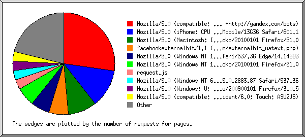

Web Server Statistics for kaha.arctoys.com
Web Server Statistics for kaha.arctoys.com
Program started on Sat, Feb 25 2017 at 7:12 PM.
Analyzed requests from Tue, Jan 31 2017 at 12:48 PM to Fri, Feb 24 2017 at 9:42 PM (24.37 days).
Web Server Statistics for kaha.arctoys.comProgram started on Sat, Feb 25 2017 at 7:12 PM.
Analyzed requests from Tue, Jan 31 2017 at 12:48 PM to Fri, Feb 24 2017 at 9:42 PM (24.37 days).
(Go To: Top | General Summary | Monthly Report | Daily Summary | Hourly Summary | Domain Report | Organization Report | Failed Referrer Report | Referring Site Report | Browser Report | Browser Summary | Operating System Report | Status Code Report | File Size Report | File Type Report | Directory Report | Request Report)
Figures in parentheses refer to the 7-day period ending Feb 25 2017 at 7:12 PM.
Successful requests: 347 (52)
Average successful requests per day: 14 (7)
Successful requests for pages: 33 (1)
Average successful requests for pages per day: 1
Failed requests: 24 (0)
Distinct files requested: 69 (1)
Distinct hosts served: 28 (1)
Data transferred: 11.34 megabytes (2.08 megabytes)
Average data transferred per day: 476.40 kilobytes (304.43 kilobytes)
(Go To: Top | General Summary | Monthly Report | Daily Summary | Hourly Summary | Domain Report | Organization Report | Failed Referrer Report | Referring Site Report | Browser Report | Browser Summary | Operating System Report | Status Code Report | File Size Report | File Type Report | Directory Report | Request Report)
Each unit ( ) represents 1 request for a page.
) represents 1 request for a page.
| month | #reqs | #pages | |
|---|---|---|---|
| Jan 2017 | 10 | 5 |  |
| Feb 2017 | 337 | 28 |   |
Busiest month: Feb 2017 (28 requests for pages).
(Go To: Top | General Summary | Monthly Report | Daily Summary | Hourly Summary | Domain Report | Organization Report | Failed Referrer Report | Referring Site Report | Browser Report | Browser Summary | Operating System Report | Status Code Report | File Size Report | File Type Report | Directory Report | Request Report)
Each unit () represents 1 request for a page.
| day | #reqs | #pages | |
|---|---|---|---|
| Sun | 6 | 3 |  |
| Mon | 106 | 7 | |
| Tue | 63 | 8 | |
| Wed | 164 | 12 | |
| Thu | 2 | 1 | |
| Fri | 5 | 2 | |
| Sat | 1 | 0 |
(Go To: Top | General Summary | Monthly Report | Daily Summary | Hourly Summary | Domain Report | Organization Report | Failed Referrer Report | Referring Site Report | Browser Report | Browser Summary | Operating System Report | Status Code Report | File Size Report | File Type Report | Directory Report | Request Report)
Each unit () represents 1 request for a page.
| hour | #reqs | #pages | |
|---|---|---|---|
| 0 | 1 | 1 | |
| 1 | 0 | 0 | |
| 2 | 0 | 0 | |
| 3 | 2 | 2 | |
| 4 | 0 | 0 | |
| 5 | 0 | 0 | |
| 6 | 1 | 1 | |
| 7 | 3 | 1 | |
| 8 | 0 | 0 | |
| 9 | 3 | 2 | |
| 10 | 52 | 2 | |
| 11 | 0 | 0 | |
| 12 | 10 | 7 | |
| 13 | 1 | 1 | |
| 14 | 153 | 7 | |
| 15 | 99 | 2 | |
| 16 | 7 | 3 | |
| 17 | 2 | 0 | |
| 18 | 1 | 1 | |
| 19 | 1 | 0 | |
| 20 | 3 | 2 | |
| 21 | 4 | 0 | |
| 22 | 4 | 1 | |
| 23 | 0 | 0 |
(Go To: Top | General Summary | Monthly Report | Daily Summary | Hourly Summary | Domain Report | Organization Report | Failed Referrer Report | Referring Site Report | Browser Report | Browser Summary | Operating System Report | Status Code Report | File Size Report | File Type Report | Directory Report | Request Report)
Listing domains, sorted by the amount of traffic.
| #reqs | %bytes | domain |
|---|---|---|
| 347 | 100% | [unresolved numerical addresses] |
(Go To: Top | General Summary | Monthly Report | Daily Summary | Hourly Summary | Domain Report | Organization Report | Failed Referrer Report | Referring Site Report | Browser Report | Browser Summary | Operating System Report | Status Code Report | File Size Report | File Type Report | Directory Report | Request Report)
Listing organizations, sorted by the number of requests.
| #reqs | %bytes | organization |
|---|---|---|
| 200 | 65.86% | 114 |
| 60 | 16.38% | 210.57 |
| 50 | 17.40% | 110 |
| 11 | 0.08% | 93 |
| 4 | 0.01% | 173.252 |
| 4 | 0.01% | 66.220 |
| 3 | 0.01% | 139.228 |
| 3 | 0.03% | 202.80 |
| 2 | 0.07% | 5 |
| 2 | 36 | |
| 2 | 188.255 | |
| 2 | 0.01% | 141.8 |
| 1 | 0.07% | 149.154 |
| 1 | 0.07% | 37 |
| 1 | 95 | |
| 1 | 130.193 |
(Go To: Top | General Summary | Monthly Report | Daily Summary | Hourly Summary | Domain Report | Organization Report | Failed Referrer Report | Referring Site Report | Browser Report | Browser Summary | Operating System Report | Status Code Report | File Size Report | File Type Report | Directory Report | Request Report)
Listing referring URLs, sorted by the number of failed requests.
| #reqs | URL |
|---|---|
| 7 | http://kaha.arctoys.com/ |
| 2 | http://kaha.arctoys.com/assets/kaha/css/cs-skin-border.css |
(Go To: Top | General Summary | Monthly Report | Daily Summary | Hourly Summary | Domain Report | Organization Report | Failed Referrer Report | Referring Site Report | Browser Report | Browser Summary | Operating System Report | Status Code Report | File Size Report | File Type Report | Directory Report | Request Report)
Listing referring sites, sorted by the number of requests.
| #reqs | site |
|---|---|
| 303 | http://kaha.arctoys.com/ |
| 2 | http://l.facebook.com/ |
| 2 | http://yandex.ru/ |
| 1 | https://www.facebook.com/ |
(Go To: Top | General Summary | Monthly Report | Daily Summary | Hourly Summary | Domain Report | Organization Report | Failed Referrer Report | Referring Site Report | Browser Report | Browser Summary | Operating System Report | Status Code Report | File Size Report | File Type Report | Directory Report | Request Report)

Listing browsers with at least 1 request for a page, sorted by the number of requests for pages.
| #reqs | #pages | browser |
|---|---|---|
| 14 | 9 | Mozilla/5.0 (compatible; YandexBot/3.0; +http://yandex.com/bots) |
| 200 | 4 | Mozilla/5.0 (iPhone; CPU iPhone OS 9_3_5 like Mac OS X) AppleWebKit/601.1.46 (KHTML, like Gecko) Version/9.0 Mobile/13G36 Safari/601.1 |
| 56 | 3 | Mozilla/5.0 (Macintosh; Intel Mac OS X 10.12; rv:51.0) Gecko/20100101 Firefox/51.0 |
| 5 | 2 | facebookexternalhit/1.1 (+http://www.facebook.com/externalhit_uatext.php) |
| 3 | 2 | Mozilla/5.0 (Windows NT 10.0; Win64; x64) AppleWebKit/537.36 (KHTML, like Gecko) Chrome/51.0.2704.79 Safari/537.36 Edge/14.14393 |
| 3 | 2 | Mozilla/5.0 (Windows NT 10.0; WOW64; rv:51.0) Gecko/20100101 Firefox/51.0 |
| 1 | 1 | request.js |
| 2 | 1 | Mozilla/5.0 (Windows NT 6.1) AppleWebKit/537.36 (KHTML, like Gecko) Chrome/55.0.2883.87 Safari/537.36 |
| 2 | 1 | Mozilla/5.0 (Windows; U; Windows NT 5.1; zh-CN; rv:1.9.0.5) Gecko/200900101 Firefox/3.0.5 |
| 1 | 1 | Mozilla/5.0 (compatible; MSIE 10.0; Windows NT 6.1; Trident/6.0; Touch; ASU2JS) |
| 1 | 1 | facebookexternalhit/1.1 |
| 2 | 1 | Mozilla/5.0 (Windows NT 10.0; WOW64; rv:49.0) Gecko/20100101 Firefox/49.0 |
| 1 | 1 | Mozilla/5.0 (compatible; MSIE 10.0; Windows NT 6.1; Trident/6.0) |
| 50 | 1 | Mozilla/5.0 (Windows NT 6.1; rv:51.0) Gecko/20100101 Firefox/51.0 |
| 1 | 1 | Mozilla/5.0 (Macintosh; Intel Mac OS X 10_12_2) AppleWebKit/537.36 (KHTML, like Gecko) WhatsApp/0.2.2732 Chrome/53.0.2785.113 Electron/1.4.1 Safari/537.36 |
| 1 | 1 | TelegramBot (like TwitterBot) |
| 2 | 1 | Mozilla/5.0 (Windows NT 6.1; WOW64) AppleWebKit/537.36 (KHTML, like Gecko) Chrome/31.0.1650.57 Safari/537.36 |
| 2 | 0 | [not listed: 1 browser] |
(Go To: Top | General Summary | Monthly Report | Daily Summary | Hourly Summary | Domain Report | Organization Report | Failed Referrer Report | Referring Site Report | Browser Report | Browser Summary | Operating System Report | Status Code Report | File Size Report | File Type Report | Directory Report | Request Report)
Listing browsers with at least 1 request for a page, sorted by the number of requests for pages.
| # | #reqs | #pages | browser |
|---|---|---|---|
| 1 | 16 | 9 | Netscape (compatible) |
| 2 | 208 | 9 | Safari |
| 8 | 5 | Safari/537 | |
| 200 | 4 | Safari/601 | |
| 3 | 113 | 8 | Firefox |
| 109 | 6 | Firefox/51 | |
| 2 | 1 | Firefox/49 | |
| 2 | 1 | Firefox/3 | |
| 4 | 6 | 3 | facebookexternalhit |
| 6 | 3 | facebookexternalhit/1 | |
| 5 | 2 | 2 | MSIE |
| 2 | 2 | MSIE/10 | |
| 6 | 1 | 1 | request.js |
| 7 | 1 | 1 | TelegramBot (like TwitterBot) |
(Go To: Top | General Summary | Monthly Report | Daily Summary | Hourly Summary | Domain Report | Organization Report | Failed Referrer Report | Referring Site Report | Browser Report | Browser Summary | Operating System Report | Status Code Report | File Size Report | File Type Report | Directory Report | Request Report)
Listing operating systems, sorted by the number of requests for pages.
| # | #reqs | #pages | OS |
|---|---|---|---|
| 1 | 24 | 14 | OS unknown |
| 2 | 66 | 11 | Windows |
| 8 | 5 | Windows NT | |
| 56 | 5 | Unknown Windows | |
| 2 | 1 | Windows XP | |
| 3 | 257 | 8 | Macintosh |
(Go To: Top | General Summary | Monthly Report | Daily Summary | Hourly Summary | Domain Report | Organization Report | Failed Referrer Report | Referring Site Report | Browser Report | Browser Summary | Operating System Report | Status Code Report | File Size Report | File Type Report | Directory Report | Request Report)

Listing status codes, sorted numerically.
| #reqs | status code |
|---|---|
| 346 | 200 OK |
| 1 | 304 Not modified since last retrieval |
| 22 | 404 Document not found |
| 2 | 500 Internal server error |
(Go To: Top | General Summary | Monthly Report | Daily Summary | Hourly Summary | Domain Report | Organization Report | Failed Referrer Report | Referring Site Report | Browser Report | Browser Summary | Operating System Report | Status Code Report | File Size Report | File Type Report | Directory Report | Request Report)
| size | #reqs | %bytes |
|---|---|---|
| 0 | 1 | |
| 1B- 10B | 0 | |
| 11B- 100B | 5 | |
| 101B- 1kB | 105 | 0.47% |
| 1kB- 10kB | 135 | 4.55% |
| 10kB-100kB | 64 | 18.15% |
| 100kB- 1MB | 37 | 76.83% |
(Go To: Top | General Summary | Monthly Report | Daily Summary | Hourly Summary | Domain Report | Organization Report | Failed Referrer Report | Referring Site Report | Browser Report | Browser Summary | Operating System Report | Status Code Report | File Size Report | File Type Report | Directory Report | Request Report)

Listing extensions with at least 0.1% of the traffic, sorted by the amount of traffic.
| #reqs | %bytes | extension |
|---|---|---|
| 12 | 40.79% | .jpg [JPEG graphics] |
| 38 | 25.96% | .png [PNG graphics] |
| 132 | 13.18% | .js [JavaScript code] |
| 6 | 11.33% | .ttf |
| 102 | 5.91% | .css [Cascading Style Sheets] |
| 8 | 1.58% | .woff |
| 33 | 0.87% | [directories] |
| 2 | 0.30% | .woff2 |
| 14 | 0.08% | [not listed: 3 extensions] |
(Go To: Top | General Summary | Monthly Report | Daily Summary | Hourly Summary | Domain Report | Organization Report | Failed Referrer Report | Referring Site Report | Browser Report | Browser Summary | Operating System Report | Status Code Report | File Size Report | File Type Report | Directory Report | Request Report)
Listing directories with at least 0.01% of the traffic, sorted by the amount of traffic.
| #reqs | %bytes | directory |
|---|---|---|
| 288 | 99.05% | /assets/ |
| 40 | 0.89% | [root directory] |
| 6 | 0.04% | /css/ |
| 13 | 0.02% | /_autoindex/ |
(Go To: Top | General Summary | Monthly Report | Daily Summary | Hourly Summary | Domain Report | Organization Report | Failed Referrer Report | Referring Site Report | Browser Report | Browser Summary | Operating System Report | Status Code Report | File Size Report | File Type Report | Directory Report | Request Report)
Listing files with at least 20 requests, sorted by the number of requests.
| #reqs | %bytes | last time | file |
|---|---|---|---|
| 33 | 0.87% | Feb/20/17 2:39 PM | / |
| 314 | 99.13% | Feb/24/17 9:42 PM | [not listed: 55 files] |